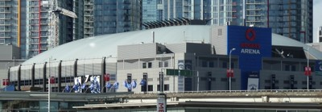
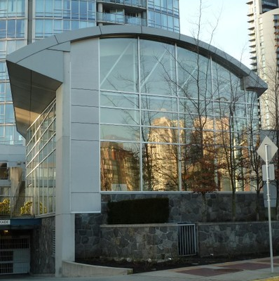

Curvado [RSH7]
El techo es curvo. Puede ser de una forma arqueada ronda regular, irregular o más curvada cuando se ve en perfil.

Techo curvado, Rogers Arena, Vancouver, Canada (S. Brzev)

Techo curvo (domo en tierra), Iran (F. Naeim)

Techo curvo irregular, Canada (S. Brzev)

Techo curvo regular, Canada (S. Brzev)

Forma de techo curvo, Beijing Capital International Airport, China (S. Brzev)